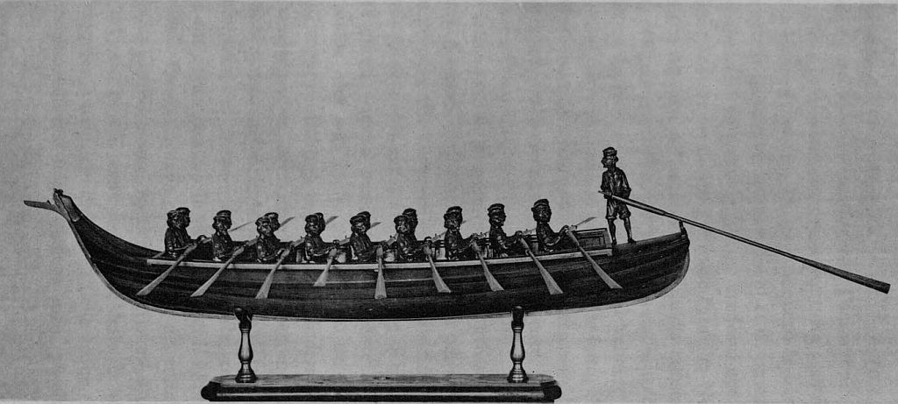
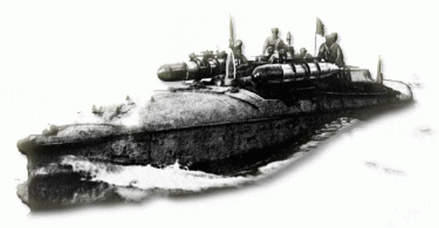
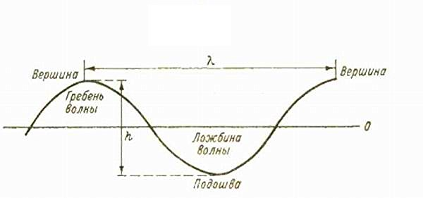

Мы уже подробно рассказывали о жизни известного венецианского флотоводца Кристофоро да Канала и его главном труде, посвященном военному флоту – Della milizia marittima libri quattro , di Cristoforo Canale.
Во время летних каникул у меня появилась возможность подтянуть знания итальянского языка XV-XVI веков до уровня, позволившего более детально ознакомиться с этим во многих отношениях замечательным трудом, и сейчас хотелось бы вынести на станицы журнала несколько интересных, на мой взгляд, тем, не нашедших еще отражения в нашей литературе. Тем более, что для публикации серьезных постов по нашей главной теме я пока не готов.
Сегодня мы поговорим о классификации кораблей, которую разработал Кристофоро да Канал. В основу ее положены две базовых характеристики: длина корабля и его мореходные качества. Заслуживает внимания тот факт, что изложение классификации да Канал вкладывает в уста Контарини (мы помним, что вся работа венецианского адмирала представлена в форме беседы четырех известных деятелей той эпохи, в числе которых был и прокуратор Святого Марка Алессандро Контарини, бывший одно время капитан-генералом венецианского флота).
По мнению автора трактата, среди множества кораблей современной ему эпохи существуют всего лишь два класса, и не больше, которые способны переносить любую погоду в море.
К первому классу он относит все суда, которые, находясь в бурном море, «поднимаются только на одну волну» (non montano più che una sol onda): фрегат, саэта (saettie) и другие подобные суда «того же размера, грузоподъемности и формы» (di simil grandezza, portata et sesto).

Модель фрегата, изготовленная адмиралом Л.Финкати в 1880 году (Museo Storico Navale, Венеция).
Фрегат, конечно, знаком нам, а вот саэта – не очень. Есть в этом вина и наших известных переводчиков. Если бы Веселовский и Любимов, переводя «Декамерона», не заменяли слово saettie (una saettia comperarono e quella segretamente armarono di gran vantaggio): «они купили скороходное судно, тайком отлично вооружили его» (у А.Н.Веселовского1896, 1955) или «приобрели быстроходное судно, постарались тайком от всего города как можно лучше оснастить его» (у Н.Любимова, 1970) описательной группой слов, то с учетом популярности новелл Боккаччо у русского читателя этот термин был бы не таким чуждым для нашего уха. А так мы почти не встречаем это слово в своей литературе. Разве что вот этот краткий отрывок из Н.П. Боголюбова:
Саэтты, sagitta, sagetia, saettia, sagitaire, отъ sagette — стрѣла, суда, называвшiяся такъ за ихъ необыкновенную быстроту и увертливость въ движенiяхъ, ходили подъ веслами и парусами. Теперь они изчезли, но въ среднiе вѣка пользовались большой известностью. Въ исторiи Пизы очень часто встречается это названiе и почти всегда говорится, что онѣ принадлежали пиратамъ, которые, конечно, дорого ценили изъ за превосходныя качества. Изъ этихъ же документовъ видно, что оне имели до 24 веселъ, и были нечто среднее между малыми галерами и бригантинами и иногда покрывались палубами.
Н.П. Боголюбов, История корабля (Том I) (1879) с.167-168
Между тем в литературе на других европейских языках, и в первую очередь, в итальянской литературе, этот термин широко использовался и дожил практически до наших дней. В частности, его использует в своих работах Габриеле д'Аннунцио, известный итальянский писатель, поэт, драматург и политический деятель (чего стоит хотя бы создание им государства Фиуме, которое он сам и возглавил – помните, как у Маяковского в «Советской азбуке»
Фазан красив, ума ни унции.
Фиуме спьяну взял д’Аннунцио. )
Многие связывают имя Д’Аннунцио с возникновением итальянского фашизма. Но здесь не все так однозначно. В недавно вышедшей обстоятельной книге покойной Елены Шварц об этом хорошо известном в России человеке (по свидетельству Андрея Белого, в десятых годах прошлого века его книги стояли на полках всех уважающих себя русских интеллигентов) есть такие слова:
Габриэле Д’Аннунцио находился в сложных и запутанных отношениях с Муссолини, никогда не состоял в партии, и если невольно помог движению, то скорее как эстет и историк, подарив ему приветственный взмах руки, позаимствованный из Древнего Рима, деление войск на легионы, манипулы и центурии, победный клич эйя-эйя-алала, и черные рубашки. Сам же дух торжествующего фашизма был ему противен.
Елена Шварц «Габриэле Д’Аннунцио. Крылатый циклоп (Путеводитель по жизни Габриэле Д’Аннунцио)» («Вита Нова», Санкт-Петербург, 2010)
В дневниковой записи за 10 февраля 1918 года Д’Аннунцио пишет:
Scorgo sul cilestro dell'acqua le nostre saettìe grige coi loro siluri dal muso di bronzo…
[Я вижу на лазурной поверхности воды наши серые саэты, с бронзовыми носами их торпед…]
Друг и сослуживец Д’Аннунцио известный военный фотограф периода Первой мировой войны Luigi Rizzo сфотографировал эти самые «саэты», его фотография дожила до наших дней:

Впрочем, вернемся к Кристофоро да Каналу.
Венецианский адмирал считает, что морская стихия не может одолеть корабль этого (первого) класса, если им управляет умелая рука осмотрительного рулевого, не допускающего ударов волны в борт судна, а ставящего под удары штормового моря его корму. И поскольку корабли этого класса не могу взойти больше чем на одну волну, они не подвергаются опасности, подъем и спуск по волнам не грозит им гибелью.
Здесь мы должны отметить, что точка зрения да Канала отличается от современных представлений о волнах. Если мы называем длиной волны расстояние от одной ее вершины до другой, то для да Канала длина волны – лишь один ее гребень, т.е. он называет так лишь половину волны в нашем представлении.

Лучшим и самым совершенным классом, по мнению Кристофоро да Канала, является другая группа кораблей, которые всходят сразу на три волны. Но о них мы поговорим в следующий раз.